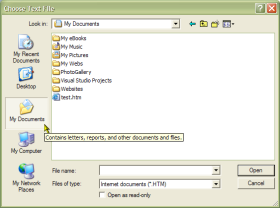

VB5 Common Dialog Direct Binary (32K)
VB5 Common Dialog Direct Binary (32K)
 VB5 Common Dialog Direct Demonstration (19K)
VB5 Common Dialog Direct Demonstration (19K)
 VB5 Common Dialog Direct Full Source (73K)
VB5 Common Dialog Direct Full Source (73K)
 VB6 Common Dialog Direct Binary (32K)
VB6 Common Dialog Direct Binary (32K)
 VB6 Common Dialog Direct Demonstration (14K)
VB6 Common Dialog Direct Demonstration (14K)
 VB6 Common Dialog Direct Full Source (70K)
VB6 Common Dialog Direct Full Source (70K)
 Bugs: 3 / 4
Bugs: 3 / 4
 Issues: 2 / 3
Issues: 2 / 3
 Questions: 0 / 0
Questions: 0 / 0
 20 Jun 2003
20 Jun 2003
Hook support now enabled for Print Dialogs. The prior code did not work as the structure was incorrectly aligned. The new version fixes this problem. Many thanks to Uwe Wiemer and Klaus Probst for identifying the fix.
Added a properties to return the selected Printer device name, driver name and port.

CommonDialog/Direct
Take control over all the Windows Common Dialogs with this component
Common Dialog/Direct is a new DLL or class library which shows how to completely replace COMDLG32.OCX through Visual Basic code. The main advantage of this is you no longer need to put a control on a form to use common dialogs - just declare an instance of the class and you have a straight replacement. You can also incorporate the Common Dialog/Direct code straight into your own project if you want to reduce dependency files when you ship your project.
This library is based on articles in MSDN and the VB library provided by Bruce McKinney in his excellent book Hardcore Visual Basic. It expands on both sources - the Hardcore VB library isn't a drop in replacement for the VB version, it has a completely new interface, whilst the main MSDN version was somewhat bug-ridden.Features
There are a number of areas where Common Dialog/Direct improves upon the implementation of COMDLG32.OCX supplied with VB:
- Common Dialog hooks are supported. It is possible to:
- Confirm files being chosen before a file dialog is closed
- Centre dialogs accurately to any object
- Incorporate a common dialog into your own form, like the Add Form and New Project dialogs in VB5.
- Templates are supported.
- The file dialogs return the selected filter index when the user chooses a file.
- You can get and set the custom colours set up in the colour dialog.
- It is possible to show the Page Setup dialog for the printer.
Here is a sample of how to use Common Dialog/Direct:
Dim c As New cCommonDialog
With c
.DialogTitle = "Choose Text FIle"
.CancelError = True
.hWnd = Me.hWnd
.flags = OFN_FILEMUSTEXIST Or OFN_PATHMUSTEXIST
.InitDir = "C:\STEVEMAC"
.Filter = "Internet documents (*.HTM)|*.HTM|Text files (*.TXT)|*.TXT|All Files (*.*)|*.*"
.FilterIndex = 1
.ShowOpen
txtFileName = .filename
txtFilter = .Filter
txtContents = GetFileText(.filename)
End With
The sample code in the download exercises all the different dialogs.